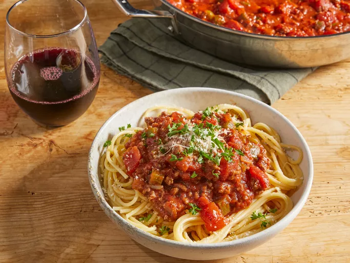

Broccoli and Chicken Stir-Fry
This chicken and broccoli recipe is easy to make by stir-frying chicken pieces with fresh broccoli in a mix of soy, ginger, garlic, and brown sugar. Serve with rice for an easy, pleasing dinner.
By; Chef Moh

This chicken and broccoli recipe is easy to make by stir-frying chicken pieces with fresh broccoli in a mix of soy, ginger, garlic, and brown sugar. Serve with rice for an easy, pleasing dinner.
By; Chef Moh
This recipe has been handed down from my mother. It is a family favorite and will not be replaced! (Definite husband pleaser!) Serve over any variety of hot cooked pasta.
By; Chef Moh
This Guinness beef stew is a very simple dish, but at the same time, it has a deep, complex, rich flavor. The maltiness of dark beer really does amazing things for the gravy. I served this in a nice ring of green onion-mashed potatoes. I hope you give this a try, whether for Saint Patrick's Day or any time of the year.
Submtted by; Habibi

You're home alone? Wat some rice, but you want to switch thoings around? A quick fried rice recipe like you get at your favorite Chinese restaurant. Leftover rice, plus a couple of eggs, baby carrots, peas, and soy sauce is all you need. Garnish with sliced green onions, if desired.
By; Chef Brandon